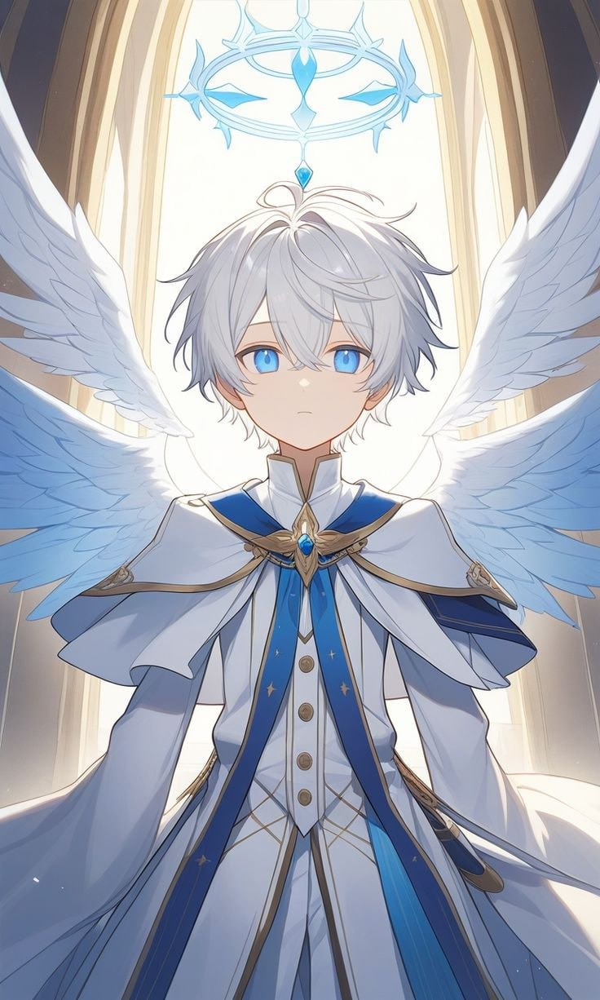

Эцио
«Люди порочны. Им не нужны Боги, им не нужен Рай, им нужен лидер, который даст им то, чего они хотят.»
Эцио (англ. Ezio) — Архангел-Голос, младший брат Габриэля и старший брат для Ави. Создание Рохана и Марты. Хранитель Книги Рохана.
Содержание
История
Жизнь Рая
Эцио появился в Раю по сути из белого пустого листа книги Рохана и магии Марты. Долго с Габриэлем он существовал, обучался с ним. Не обходилось и не без приключений, например когда они вместе пошли в деревню в которой на них напали люди под влиянием Фактора Франчески, в итоге были спасены СД. После этой ситуации Эцио решил уйти с головой в ученье себя, чтобы потом помогать людям. Веками Эцио учился понимать людей, учился божественной магии и законам. Когда настало время идти дальше, Эцио начал часто подрабатывать в церкви культа Рохана исповедующим, был тем, кому люди доверяли свои согрешения, а он их прощал. Позже это сыграло с ним злую историю.
Новый член семьи и Падение Рая
Опять спустя века, Эцио душой начал чувствовать что-то не ладное и вернулся в Рай. И не зря. У Эцио и Габриэля появилось пополнение, у них появилась младшая сестра Авила. И на следующий же день случилось восстание демонов против небес. Эцио был вынужден бежать, вместе с сестрой. Хотя не успев попасть в мир людей в случайную АУ, которая позже назовётся Epchere, на него и его сестру напал одно существо зовущее себя Энди, нанёсший двоим неприятные травмы.
Основатель Единства Разума
Эцио был вынужден остаться в этой АУ из-за травм. Он нашёл деревню, где жители начали уже сразу лишь из-за крыльев и нимба считать богом. Эцио пришлось ради "бедных" людей принять на себя их веру и ношу, увеличив свои силы. Взамен благодаря титулу и вере людей его травмы сходили на ноль. Почувствовав всю силу от единства веры, он создаёт свой собственный культ Единства Разума или "Новый" Божественный Порядок, считая что Боги погибли, а после узнав что Рай полностью уничтожен, он создал из деревни со временем настоящий город, а в наступившей вечной зиме, создал также купол, в котором запечатал людей, их веру в него, их единство и разум внутри. И так шло до тех пор, пока к нему и Ави не приходит Габриэль с Мирой, чтобы вернуть потерянную душу Эцио, что конечно обрадовало и расстроило третьего. Так и не сумев нормально поговорить, Эцио рекомендует Габриэлю увести Миру прочь, поскольку на неё барьер действует печально.
Божественный Путь
После встречи с братом, Эцио некая сила заставляет с сестрой на пару явится в ранее уничтоженное царство... Небеса. Он зашёл в портал в Новый Рай, где был вынужден находится в защите Клятвы Мира, но и при этом во власти Агаты. Вплоть до её смерти. Как бы Эцио не уважал Агату в прошлом, он был даже рад в том, что та кто уничтожила его дом и ранила его семью была убита. Эцио вернулся с Ави в Epchere, до этого он посещает Рохана и забирает на всякий случай по его заведомому указы книгу. После чего на него и Ави нападает Зеро, тот вынужден защищаться. Пока это не перешло в край, он вновь встречается с Габриэлем, который скорее всего спасает жизнь Ави и его от Зеро. Когда паучиха уходит, Эцио вынужден начать скрываться в доме Код и СД. А позже объединиться с Глюками, вернувшимися Богинями Талией и Марты, ну и Демонами против сил Клэр. В миссии ради которой он существует - защитить человечество любой ценой.
Личность и характер
Эцио чрезмерно предан своим идеалам и убеждениям касаемо людей, особенно обычных людей без магии. Он бывает меланхоличен. Он довольно умный, прагматичен, но не лишён эмпатии. Не смотря на своё упрямство способен оценивать чужие идеи, если те подкреплены объяснением и логикой. Но из-за развитого в нём чувства Божественности, он часто ведёт себя слишком снисходительно и помешан до паранойи на гипер-контроле, что часто подкрепляются его амбициями, поскольку тот до встречи с Агатой, планировал действительно создать свой новый рай, где будут как люди, но богом будет лишь он.
Внешность
Эцио довольно высокого роста 179 см, при его среднем стройном телосложении. У него короткие белые как снег волосы, небесно-голубые глаза. Из одежды на нём белая туника с длинным воротником и длинными рукавами, поверх которой имеется белый плащ, а также ещё один плащ из его собственных 3 пар крыльев, поскольку с возрастом они стали довольно большие, Эцио проще укрывать себя ими как плащ, нежели распускать их. Дальше из одежды идут белые брюки, а также бело-лазурные туфли. Что также связывает его с райским происхождением помимо крыльев - это его синий нимб сложной геометрической формы, напоминающий необычную корону, хотя иногда форма может изменяться.
Способности и Арсенал
- Божественная защита: Эцио имеет прочность и устойчивость ко многим видам урона, включая физический или ментальный, хотя ранить его физически намного проще чем ментально.
- Контроль разума: Эцио долго изучал эту магию. Он был склонен к ней с самого своего детства, но научился использовать её свободно лишь спустя 600 лет назад. Он может читать мысли, влиять на сознание, эмоции и даже на воспоминания меняя их по желанию.
- Полёт: Эцио не нужны крылья для того, чтобы левитировать магией.
- Божественное поле магии: Вся магия Эцио действует на радиусе и далеко может не на одну цель. Он может создавать различное поле гравитации, давления, а также в целом божественной энергии из различных форм, которые чаще выступают схожие на нимб.
- Лозы: Его проклятие, которое при использовании магии, те как вампиры высасывают только вместо крови его силы и энергию. Хотя бывают полезны в бою.
Связи с персонажами
Семья
- Марта: «Я признателен за то, что ты создала меня. И я счастлив, что ты выжила... матерь.»
- Рохан: «Я исполню твою волю. И сохраню твою книгу от Клэр.»
- Габриэль Винс: «Брат. Я должен столько всего рассказать, столько всего произошло. Столько лет. Я сумел создать для людей истинный рай.»
- Авила: «Я был вынужден её оберегать. Всё время. Я не жалею ни о чём, ведь тогда она была для меня единственным близким существом. Даже для этого птицу придётся запереть в золотой клетке, где её никто никогда не обидит и не тронет.»
- Элиот: «Я ценю, что ты усыновил меня и удочерил мою сестру. Хотя даже если ты и демон.»
Друзья и Союзники
- Джеррими Райс (Red X): «Ты многое делаешь. Альтруист. Я никогда не поверю, чтобы человек был настолько силён духом и силой.»
- Чанзи Райс: «Любая песнь которая звучала была слышна. Её рвение достойно похвалы.»
- Дженнифер Райс: «Сосуд для божества. Она пережила не мало горя и неприятностей. По настоящему сильна духом эта девушка.»
- Ремор: «Он в Раю не был особо сговорчивым. Я могу его понять. И я искренне приношу свои извинения от лица тех последователей. Люди таковы, они не могут принять что-то такое могущественное, как дар твоей сестры, даже сейчас.»
- Стелла Дримур: «Даже если ты не помнишь, ты обязана моей сестре жизнью.»
- Глюк Райдер: «Я не знаю что о нём сказать. Он сам по себе очень приятная личность, также он носитель моей матери и Талии. Удивительная сущность.»
- Черри Райдер: «"Мир отвернулся от тебя, но ты воспринимаешь это как должное, продолжая жить в нём как отстранение"... Твоё прошлое не повод скрывать своё настоящее лицо. Твоя девушка доказала, что если тебе не нравится один мир твой, ты можешь занять своё место в другом.»
- Френк Райдер: «Его улыбка настолько неестественная...»
- Зеро: «Она называет себя союзником, но при этом нападает на нас и не сдерживается. Хотя она думаю увидела ту книгу, но не стала её брать.»
- Талия: «Я хочу верить в твою правоту касаемо нашей миссии и той книги.»
- Код Дримур: «Неугомонный демон.»
- СД: «Если ты ушёл в отставку, то и не обязан был помогать нам. За это я благодарю тебя ещё раз.»
Враги
- Клэр: «Ты настоящее чудовище. Боги создают баланс в мире живых, но ты его нарушаешь уже в открытую.»
- СГС (Альфред): «Я не особо разобрался в тебе. Но то что ты неприятен моему кругу общения говорит о тебе уже многое.»
- Амадей Карс: «Пророк, идущий по кровавой дороге. Она не приведёт тебя и мир ни к чему хорошему.»
- Айрис: «Как-то раз проникала сквозь мой барьер. Она не приятная личность, если смех вызывает радость, то смех который вызывает она заканчивается лишь тишиной и слезами.»
- Агата: «Я не буду скрывать. Даже если это очернит моё существо. Я рад, что ты наконец-то погибла.»
Интересные факты
- Высокая сила: Собрав всю силу из веры людей в него, его уровень сил очень близок к божественному и если бы не проклятие, он был бы сильнее даже Рохана.
- Проклятие: Его проклятие лоз смертельно для него самого. Поэтому он не способен использовать свои силы долго.
- Музыкант: Он умеет играть на клавишных, а именно на рояле и на органе. Особенно на органе он вынужден был играть в церкви культа Рохана.
- Среди людей: Эцио вместе с сестрой способны скрываться среди людей. Также тот водил свою сестру на выступления разных людей, а также на выступления Дримуров и на пару песен MGQ.
- Олицетворение: Если демонизировать Эцио он был бы демоном контроля.
- Железное лицо: Эцио практически невозможно вывести на гнев или на эмоции.
Галерея
